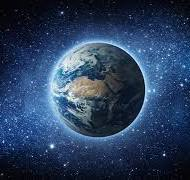
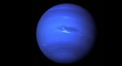

Discover the wonders of the universe, our solar system, and beyond!
The Universe
The universe is vast, mysterious, and constantly expanding. It is filled with galaxies, stars, black holes, and nebulae. Scientists estimate the universe is about 13.8 billion years old.
Our exploration of the universe has led to incredible discoveries, but there is still much we don't know. From dark matter to distant galaxies, each discovery brings us closer to understanding the cosmos.
Our Solar System
The solar system is located in the Milky Way galaxy and includes the Sun and everything that orbits it—planets, moons, asteroids, and comets.
Each planet in our solar system has unique characteristics, from the gas giants like Jupiter and Saturn to the rocky surfaces of Mars and Earth.
Planets
Mercury
Mercury is the closest planet to the Sun and the smallest in the solar system. It has no atmosphere and experiences extreme temperature variations, from blistering heat during the day to freezing cold at night. This stark environment makes it one of the most fascinating planets to study.
Venus
Venus is similar in size to Earth but has a thick, toxic atmosphere that traps heat, making it the hottest planet in our solar system. Its surface is covered with volcanoes and has crushing atmospheric pressure. Scientists often refer to it as Earth's "evil twin."
Earth

Earth is the only planet known to support life. It has a diverse environment, oceans, and a protective atmosphere that makes life possible. The Earth's magnetic field protects it from harmful solar radiation, making it uniquely habitable in the cosmos.
Mars
Mars, known as the Red Planet, has a thin atmosphere and is home to the largest volcano and canyon in the solar system. Scientists are investigating whether it could have supported life in the past, and it is a prime candidate for future human colonization.
Saturn
Saturn is famous for its spectacular ring system and is another gas giant, mostly made up of hydrogen and helium. Its moons, like Titan and Enceladus, are of great interest to scientists due to their potential for supporting life.
Jupiter
Jupiter is the largest planet, a gas giant known for its Great Red Spot, a giant storm, and its many moons. Its strong magnetic field and radiation belts make it a challenging but exciting target for exploration.
Uranus
Uranus has a unique rotation, rolling on its side as it orbits the Sun. It has a faint ring system and is known for its icy composition. The planet's bluish color comes from methane in its atmosphere.
Neptune

Neptune is the farthest planet from the Sun, known for its intense blue color and powerful winds. Its moon, Triton, has geysers that erupt icy material, making it a unique and intriguing celestial body.